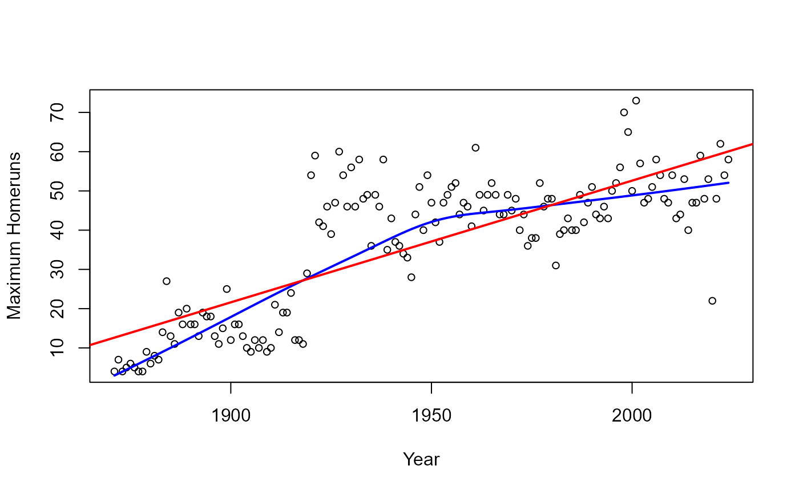

Variable Labels
battingLabels.RdThese data frames provide descriptive labels for the variables in the
Batting,
Pitching and
Fielding files (and related *Post files).
They are useful for plots and other output using Label.
Format
Each is data frame with observations on the following 2 variables.
variablevariable name
labelvariable label
Examples
data(battingLabels)
str(battingLabels)
#> 'data.frame': 22 obs. of 2 variables:
#> $ variable: chr "playerID" "yearID" "stint" "teamID" ...
#> $ label : chr "Player ID code" "Year" "Player's stint" "Team" ...
require("dplyr")
# find and plot maximum number of homers per year
batHR <- Batting %>%
filter(!is.na(HR)) %>%
group_by(yearID) %>%
summarise(max=max(HR))
with(batHR, {
plot(yearID, max,
xlab=Label("yearID"), ylab=paste("Maximum", Label("HR")),
cex=0.8)
lines(lowess(yearID, max), col="blue", lwd=2)
abline(lm(max ~ yearID), col="red", lwd=2)
})
